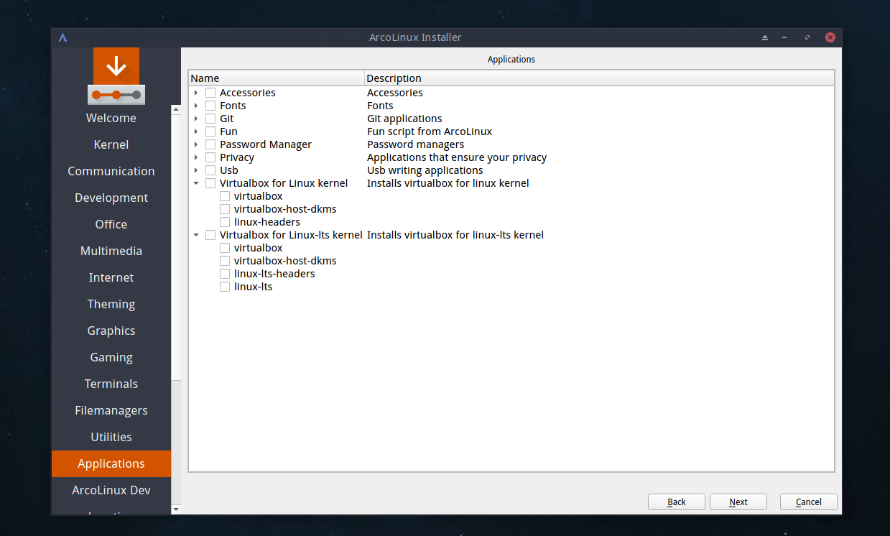

VritualBox
With a new installation of ArcoLinux you can install the correct VirtualBox with the calamaris
Nemesis scripts
Use the scripts of Erik Dubois to install VirtualBox.
Open an terminal and type or copy
git clone https://github.com/erikdubois/arcolinux-nemesis
Navigate to the AUR folder and launch the right script. Choose for linux or linux-lts.
./install...
Reboot
Just copy/paste the right code in your terminal and install manually. Type ‘neofetch‘ in your terminal to read what kernel you have.
FOR LINUX KERNEL
sudo pacman -S virtualbox
sudo pacman -S virtualbox-host-modules-arch
sudo pacman -S linux-headers
FOR THE LINUX-LTS KERNEL
sudo pacman -S virtualbox
sudo pacman -S virtualbox-host-dkms
sudo pacman -S linux-lts-headers
update-grub